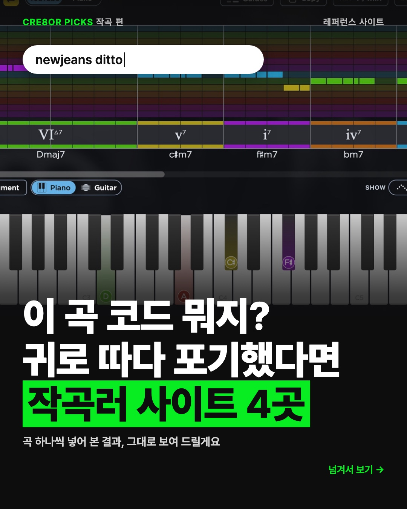
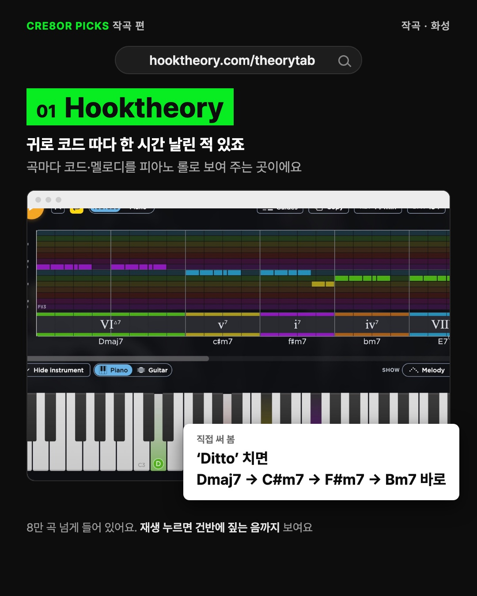
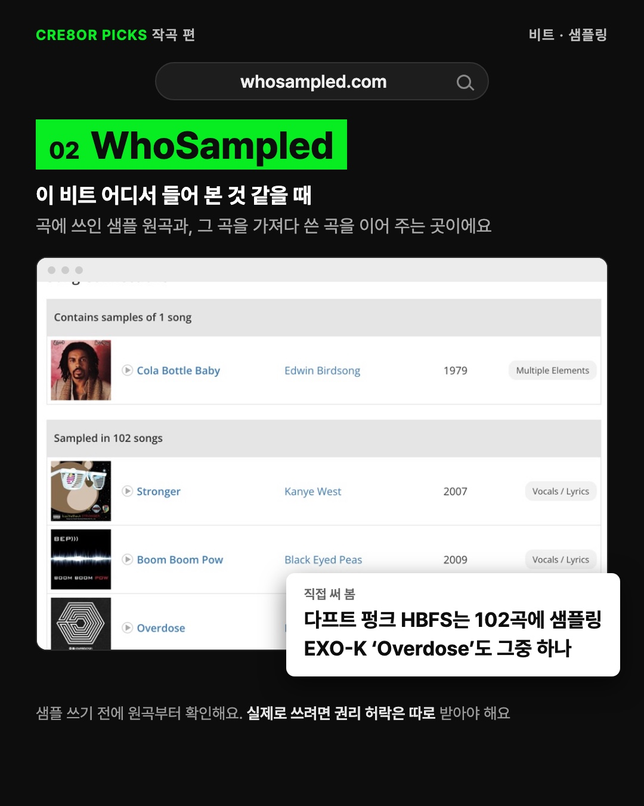
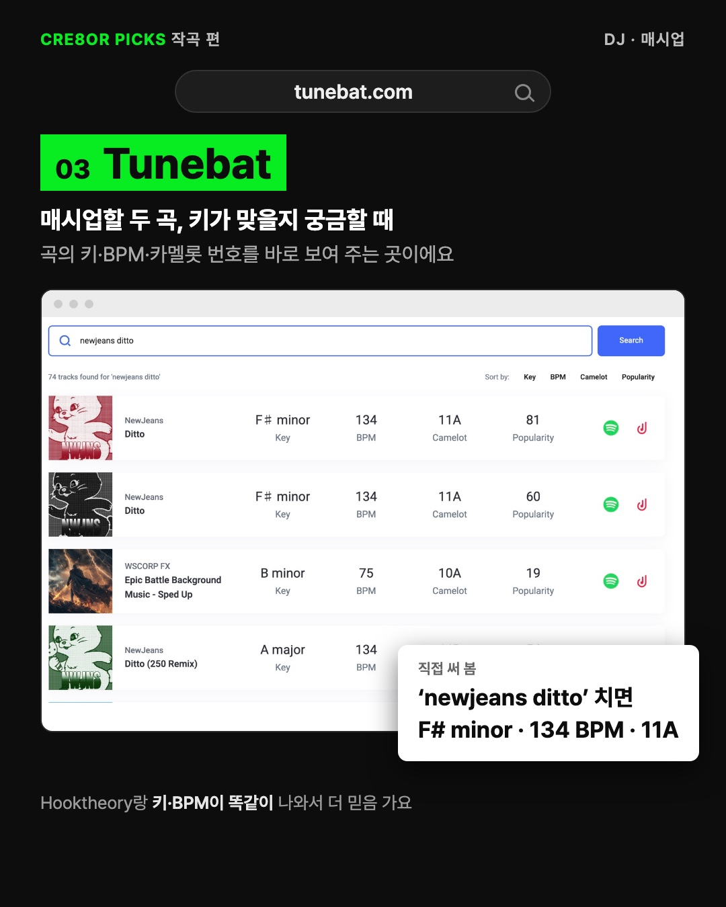
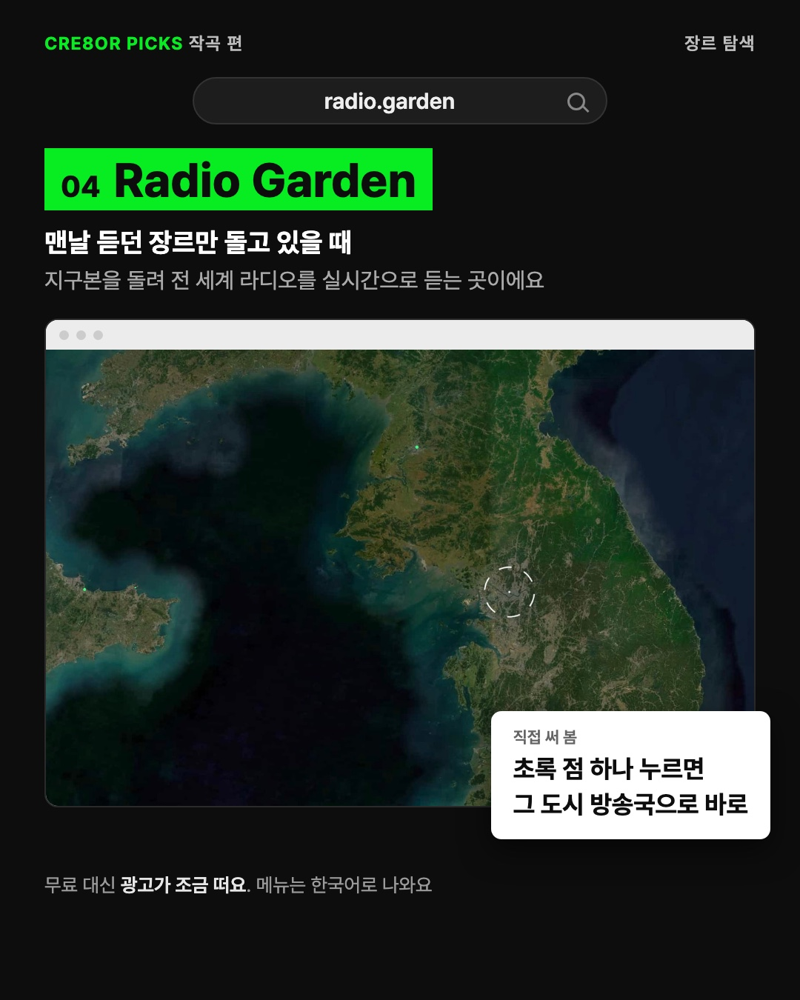
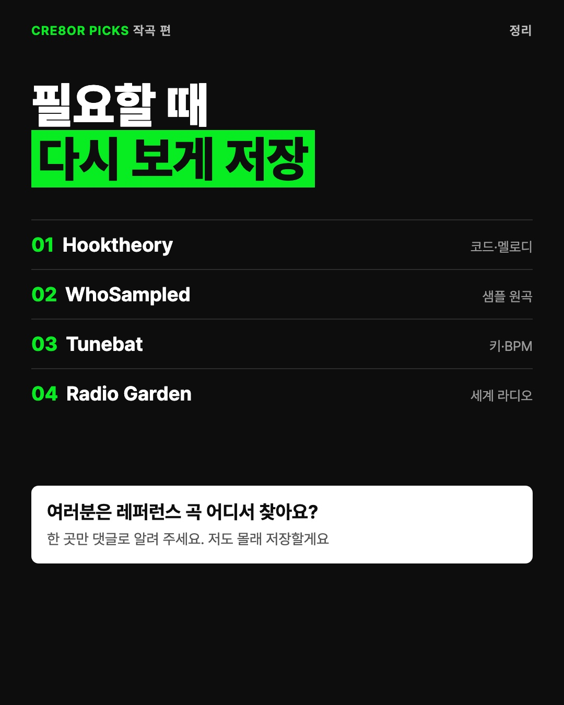

디자인 레퍼런스 모음은 흔하다는 말씀에 직군을 음악(작곡·비트메이커)으로 바꿨어요. 말투는 지난 판에서 고친 방식(독자가 겪는 순간 → 사이트 → 실제 결과) 그대로예요. 네 곳 모두 11/2에 직접 열어 곡을 넣어 봤고, 장 안 화면은 그때 찍은 실제 화면이에요. 아직 시안이고 인스타에는 올리지 않았어요.






사진을 옆으로 밀거나 ‹ › 를 누르면 6장을 넘겨 볼 수 있어요